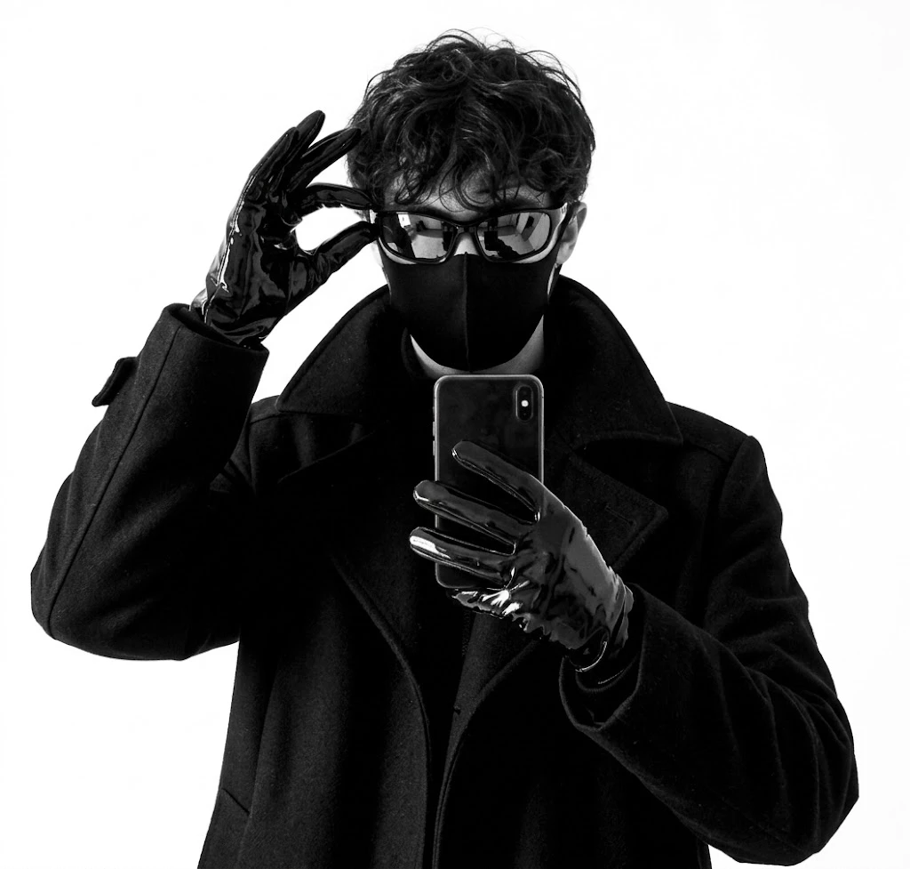
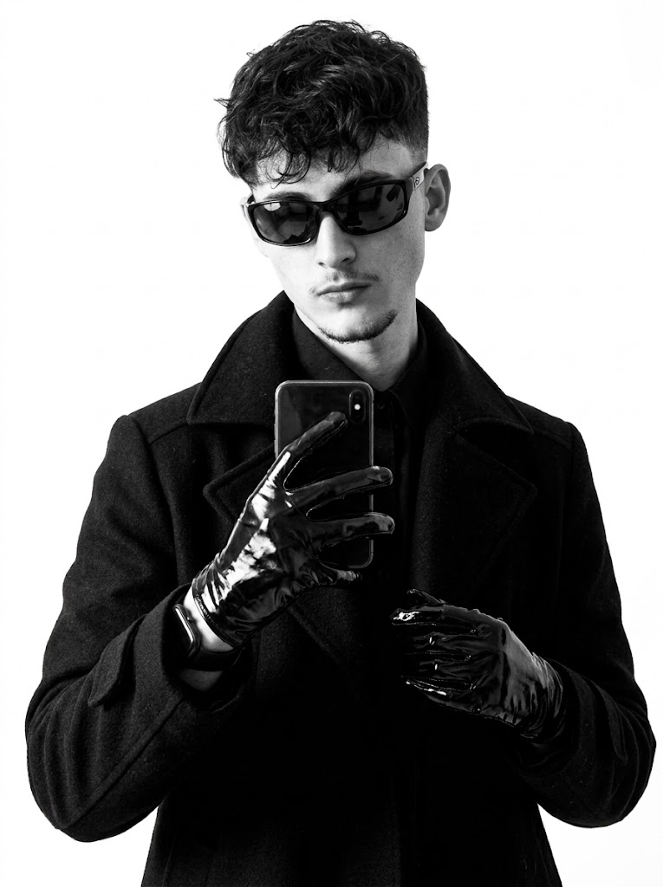
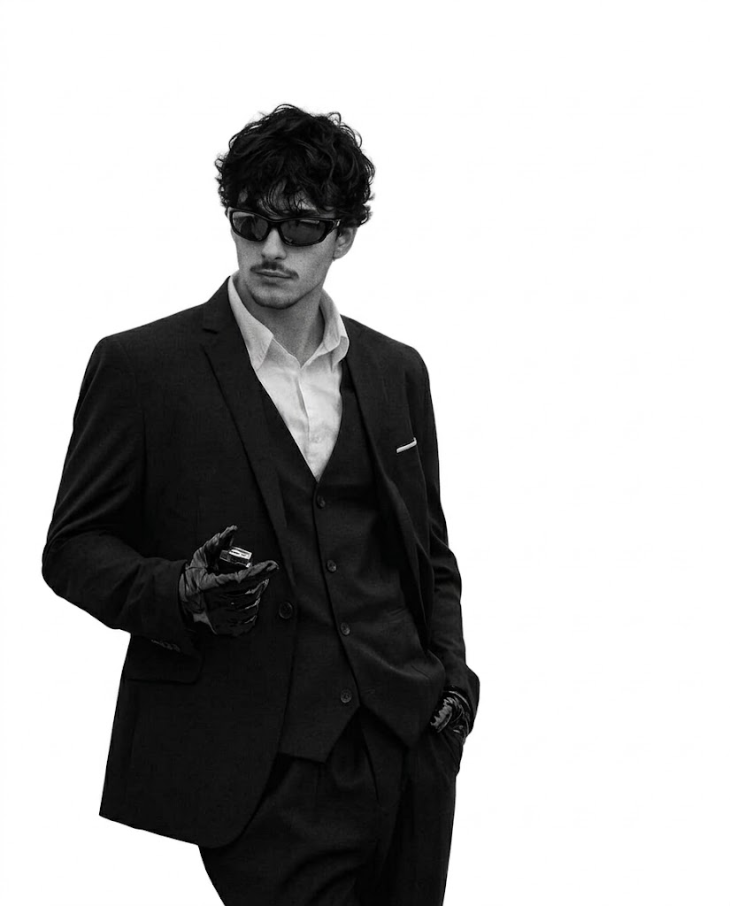
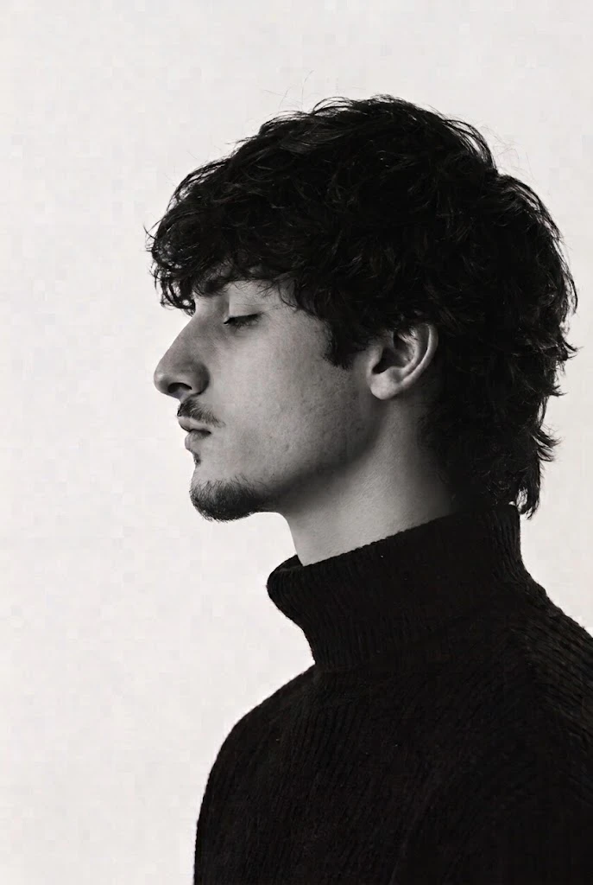

Sou Matheus Zanin, desenvolvedor full-stack e criador de jogos. Escrevo o back-end, modelo no Blender, programo o gameplay e desenho a interface: do servidor ao pixel.
Gosto de projetos com identidade: sites que vendem, jogos que dá vontade de explorar e código que não pesa. Cada projeto aqui é um repositório vivo: ainda em desenvolvimento, sempre com o próximo commit a caminho.
// Brasil, · (UTC−3)
aceitando projetos de sites e jogos